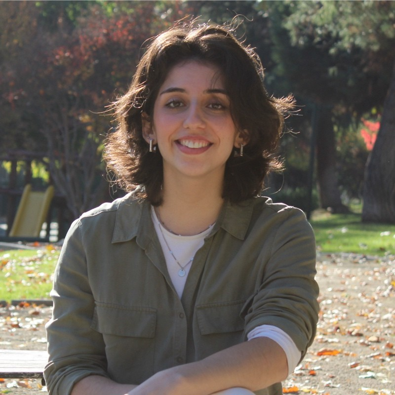

Psicoterapia para adultos · Online y presencial · Providencia
Acompaño a personas adultas en procesos terapéuticos desde un enfoque integrativo, informado del trauma y centrado en ti — no en una fórmula genérica.

No hace falta estar en crisis para pedir ayuda. Muchas personas llegan porque algo no está bien, aunque sea difícil de explicar con palabras.
La terapia puede ser un espacio para detenerse, ordenar, comprender
y comenzar a construir nuevas formas de relacionarte contigo mismo/a.
Soy psicóloga clínica de adultos, titulada de la Pontificia Universidad Católica de Chile. Trabajo desde un enfoque integrativo: adapto el proceso terapéutico a las necesidades de cada persona, combinando distintas herramientas según tu historia, tus objetivos y el momento que estás atravesando.
En cada sesión, busco construir un espacio seguro, acogedor y libre de juicios, donde puedas explorar tus pensamientos, emociones y experiencias con libertad. Mi objetivo es acompañarte en un proceso que te permita comprenderte con mayor profundidad, fortalecer tus recursos y enfrentar tus dificultades de manera más amable y sostenible.
Me interesa mantenerme actualizada. La investigación en psicología y psicoterapia me importa porque me permite ofrecerte un acompañamiento basado en lo que realmente funciona.
Ver perfil profesional →Acompaño procesos terapéuticos en distintas áreas, siempre adaptando el trabajo a tus necesidades y objetivos específicos.
No aplico una fórmula. El proceso terapéutico se adapta a ti, pero siempre descansa en estos tres principios.
Cada proceso es único, pero en general el camino sigue estos pasos. El ritmo siempre lo marcas tú.
Cada proceso es único, pero estas son las condiciones que siempre están presentes.
Sin sorpresas. La transparencia es parte del encuadre.
La frecuencia y modalidad se acuerdan en la primera sesión de acuerdo a tus necesidades y disponibilidad.
Si tienes dudas sobre formas de pago o cobertura, puedes escribirme directamente antes de agendar. No quiero que el aspecto económico sea un obstáculo sin antes conversarlo.
O escríbeme a ps.mcaranguiz@gmail.com
Respuestas directas a las dudas más comunes antes de comenzar.
Si llevas tiempo sintiéndote en alerta, que ciertas heridas siguen apareciendo o que te has exigido demasiado para poder seguir adelante — este espacio puede ser para ti. La terapia puede ser un lugar para empezar a comprender lo que te pasa con mayor profundidad y construir una relación más segura contigo mismo/a.